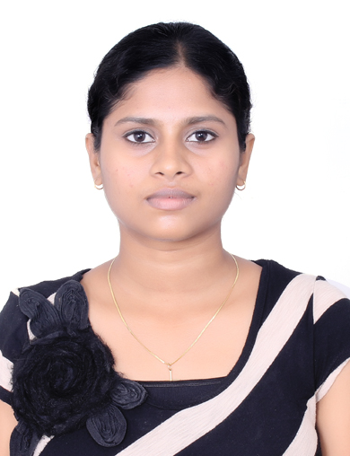
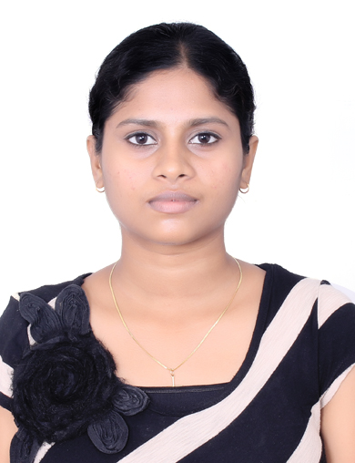

jayapradha.jayaraj@gmail.com
https://github.com/jayapradhajayaraj/
Phone:07361808261
Oxford,United Kingdom

jayapradha.jayaraj@gmail.com
https://github.com/jayapradhajayaraj/
Phone:07361808261
Oxford,United Kingdom

Technically sophisticated professional with 8+ years of experience in the areas of Software development and application maintenance in .Net.
Balvatnik School of Govt,Jericho,Oxford
Nov 2022 - Jan,May - July 2023
Cognizant Technology Solutions,Chennai,India
May 2018 – May 2022
Mphasis Ltd,Chennai,India
Dec 2014 - May 2018
| Front-end | Scripting language | Backend | Version Control tools | Other tools |
|---|---|---|---|---|
Nov 2022 - Jan,May - July 2023
Jul 2019- May 2022
May 2018 – Jun 2019
Dec 2014 - May 2018
----------EOD----------